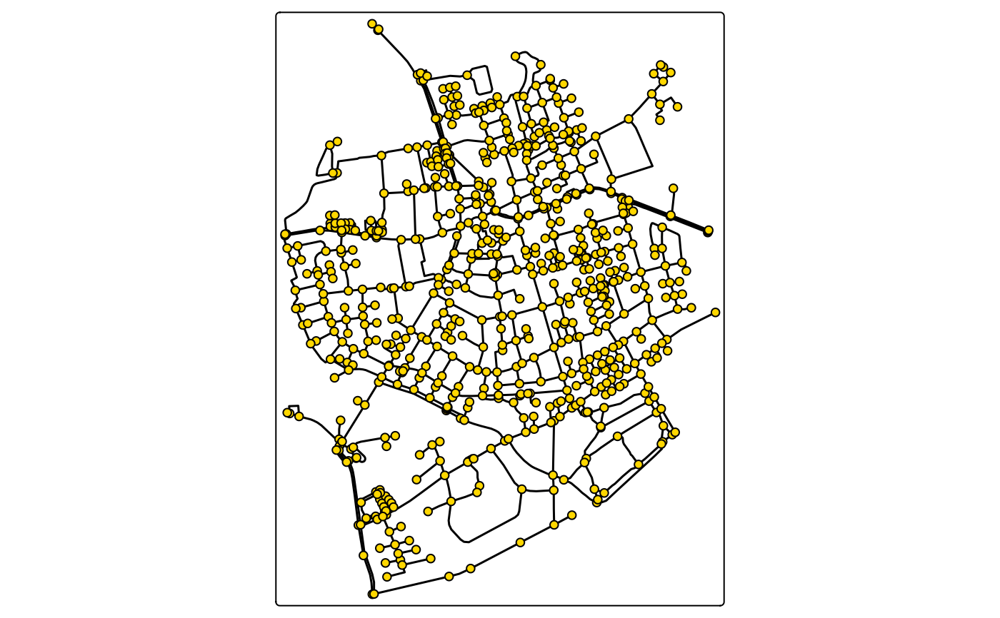

Map layer that draws the edges of a (sf)network.
Usage
tm_edges(
col = tmap::tm_const(),
col.scale = tmap::tm_scale(),
col.legend = tmap::tm_legend(),
col.free = NA,
lwd = tmap::tm_const(),
lwd.scale = tmap::tm_scale(),
lwd.legend = tmap::tm_legend(),
lwd.free = NA,
lty = tmap::tm_const(),
lty.scale = tmap::tm_scale(),
lty.legend = tmap::tm_legend(),
lty.free = NA,
col_alpha = tmap::tm_const(),
col_alpha.scale = tmap::tm_scale(),
col_alpha.legend = tmap::tm_legend(),
col_alpha.free = NA,
linejoin = "round",
lineend = "round",
plot.order = tmap::tm_plot_order("lwd", reverse = TRUE, na.order = "bottom"),
zindex = NA,
group = NA,
group.control = "check",
popup.vars = NA,
popup.format = list(),
hover = NA,
id = "",
options = opt_tm_edges()
)
opt_tm_edges(lines.only = "ifany")Arguments
- col, col.scale, col.legend, col.free
Visual variable that determines the col color. See details.
- lwd, lwd.scale, lwd.legend, lwd.free
Visual variable that determines the line width. See details.
- lty, lty.scale, lty.legend, lty.free
Visual variable that determines the line type. See details.
- col_alpha, col_alpha.scale, col_alpha.legend, col_alpha.free
Visual variable that determines the border color alpha transparency. See details.
- linejoin, lineend
line join and line end. See
gparfor details.- plot.order
Specification in which order the spatial features are drawn. See `tmap::tm_plot_order` for details.
- zindex
Map layers are drawn on top of each other. The
zindexnumbers (one for each map layer) determines the stacking order. By default the map layers are drawn in the order they are called.- group
Name of the group to which this layer belongs. This is only relevant in view mode, where layer groups can be switched (see `group.control`)
- group.control
In view mode, the group control determines how layer groups can be switched on and off. Options: `"radio"` for radio buttons (meaning only one group can be shown), `"check"` for check boxes (so multiple groups can be shown), and `"none"` for no control (the group cannot be (de)selected).
- popup.vars
names of data variables that are shown in the popups in `"view"` mode. Set popup.vars to `TRUE` to show all variables in the shape object. Set popup.vars to `FALSE` to disable popups. Set `popup.vars` to a character vector of variable names to those those variables in the popups. The default (`NA`) depends on whether visual variables (e.g.`fill`) are used. If so, only those are shown. If not all variables in the shape object are shown.
- popup.format
list of formatting options for the popup values. See the argument `legend.format` for options. Only applicable for numeric data variables. If one list of formatting options is provided, it is applied to all numeric variables of `popup.vars`. Also, a (named) list of lists can be provided. In that case, each list of formatting options is applied to the named variable.
- hover
name of the data variable that specifies the hover labels (view mode only). Set to `FALSE` to disable hover labels. By default `FALSE`, unless `id` is specified. In that case, it is set to `id`,
- id
name of the data variable that specifies the indices of the spatial features. Only used for `"view"` mode.
- options
options passed on to the corresponding `opt_<layer_function>` function
- lines.only
should only line geometries of the shape object (defined in [tmap::tm_shape()]) be plotted, or also other geometry types (like polygons)? By default `"ifany"`, which means `TRUE` in case a geometry collection is specified.
Value
a [tmap::tmap-element], supposed to be stacked after [tmap::tm_shape()] using the `+` operator. The `opt_<layer_function>` function returns a list that should be passed on to the `options` argument.
Examples
library(tmap)
library(sfnetworks)
sfn = as_sfnetwork(roxel)
tm_shape(sfn) +
tm_network()

tm_shape(sfn) +
tm_edges(col = "type", lwd = 4) +
tm_nodes()